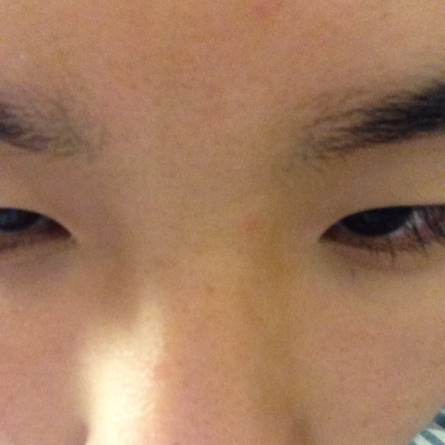
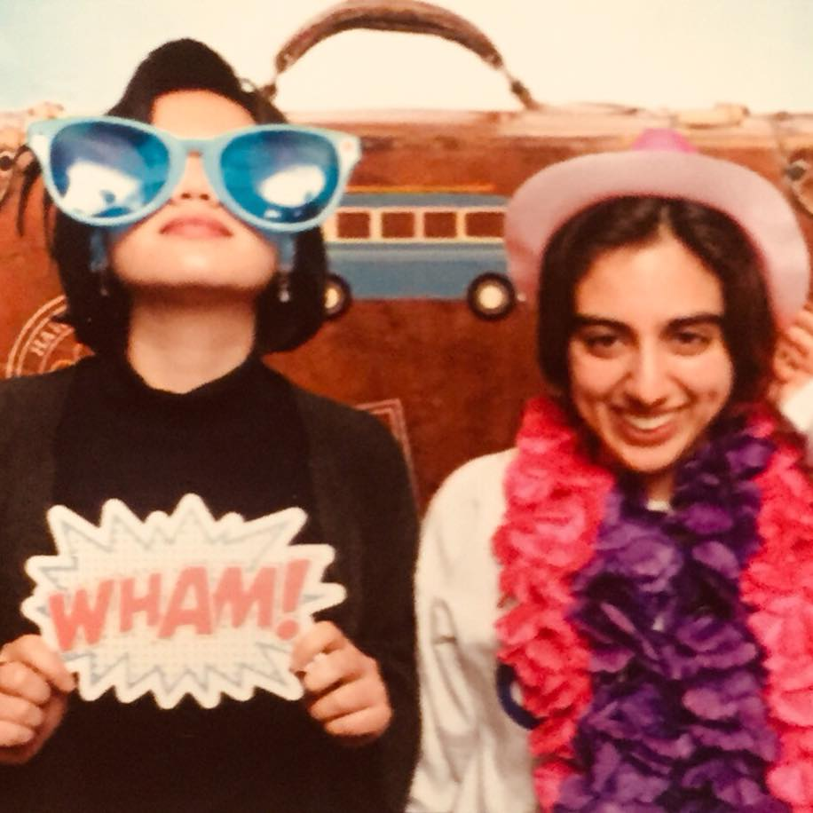

Jennifer Leung

Jasper Park
Majoring in Cognitive Brain Science
From Alexandria, VA
Likes to play/listen to music
Pursuing a career in consumer research
Class fo 2019

Michelle Feng

Kevin Bae
Majoring in Computer Science
From Norwood, NJ
Loves trying new restaurants
Wants to become a Software Engineer or Cyber Security Engineer
Class of 2020